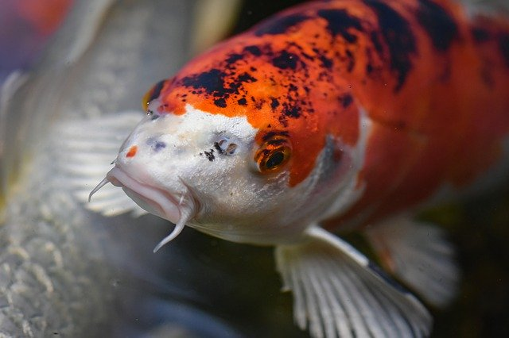

1. Ryby definicja
Ryby – tradycyjna nazwa zmiennocieplnych, pierwotnie wodnych kręgowców, oddychających skrzelami i poruszających się za pomocą płetw. Obejmuje bezżuchwowce krągłouste (Cyclostomata) oraz mające szczęki ryby właściwe (Pisces). Stanowią najliczniejszą i najbardziej zróżnicowaną grupę współcześnie żyjących kręgowców (ponad połowę). Różnią się od siebie pod względem budowy zewnętrznej i wewnętrznej, ubarwienia oraz przystosowania do warunków środowiska. Ponad 32 tysiące współcześnie żyjących gatunków opisano naukowo, a co roku naukowcy opisują 100–150 nowych gatunków morskich i nieco więcej słodkowodnych[1]. Szacuje się, że nie odkryto jeszcze co najmniej 5000 gatunków, głównie ryb głębinowych ze strefy klimatu tropikalnego[1]. W Polsce występuje około 120 gatunków
{kind=link}
2. Ryby cechy budowy ciała
Cechy charakterystyczne :
- Opływowe ciało
- głowa łączy się z tułowiem nieruchomo, nie występuje odcinek szyjny
- szkielet chrzęstny, częściowo skostniały lub kostny
- otwór gębowy zaopatrzony w ruchome szczęki (nie dotyczy krągłoustych)
- kończyny przednie przekształcone w płetwy piersiowe, tylne – w płetwy brzuszne
- skóra u większości gatunków pokryta łuskami
- u wielu gatunków występuje pęcherz pławny
- oddychają skrzelami, niektóre mogą oddychać powietrzem atmosferycznym dzięki uchyłkom jelita
- większość ma charakterystyczny dla ryb narząd – linię boczną
- zamknięty układ krążenia
- rozdzielnopłciowe
- Ow większości jajorodne
Skóra
Zewnętrzną warstwą ciała wszystkich ryb jest skóra, która stanowi zabezpieczenie organizmu przed szkodliwymi czynnikami zewnętrznymi (urazy mechaniczne, czynniki chorobotwórcze) oraz zapewnia kontakt z otoczeniem[1][3]. Pod względem różnorodności funkcji i budowy skóra ryb przewyższa skórę innych kręgowców[3]. Jest mało rozciągliwa i na tyle elastyczna, by nie utrudniać ruchów przy pływaniu[1]. Składa się z naskórka i skóry właściwej. Jest zaopatrzona w liczne, jednokomórkowe gruczoły, produkujące śluz lub płyn surowiczy[1][3]. Śluz pełni funkcję ochronną oraz zmniejsza tarcie ciała w trakcie pływania. Większość gatunków ryb ma skórę pokrytą wytworzonymi przez nią łuskami, zdecydowanie poprawiającymi jej odporność na urazy mechaniczne. Szczególnie duże ilości śluzu wydzielają ryby bezłuskie, o nagiej skórze[4].
Szkielet
Szkielet ryb jest zbudowany z chrząstek (chrzęstnoszkieletowe) lub kości (kostnoszkieletowe). Składa się z czaszki, kręgosłupa, żeber, szkieletu pasów, szkieletu płetw oraz - charakterystycznych dla ryb kostnoszkieletowych - skostnień międzymięśniowych, tzw. ości. Szczęki są ruchome, z wyjątkiem zrosłogłowych, u których górna szczęka jest trwale połączona z puszką mózgową. Dużą ruchliwość szczęk ryby zawdzięczają połączeniu żuchwy z puszką mózgową za pośrednictwem górnej części łuku gnykowego (czaszka hyostyliczna).  Kręgosłup tworzą dwuwklęsłe (amficeliczne) kręgi, których liczba jest cechą gatunkową. Między kręgami zachowane są resztki struny grzbietowej. Do kręgów w części tułowiowej przytwierdzone są żebra.
{kind=link}
Czaszka
Przednia, wysunięta i sięgająca po oczy część głowy nazywana jest pyszczkiem lub pyskiem ryby. W jego dolnej części mieści się otwór gębowy, od góry otoczony szczęką, a od dołu żuchwą (szczęką dolną). W górnej części pyska położone są otwory nozdrzowe[4]. Kształt głowy, a szczególnie położenie otworu gębowego ma ścisły związek ze sposobem pobierania pokarmu. Ryby pobierające pokarm z powierzchni wody mają otwór gębowy w położeniu górnym (b), gatunki pływające w toni wodnej – w położeniu końcowym (a), a te, które wyszukują pokarm na dnie zbiornika – w położeniu dolnym (c). Spód głowy dzieli się na podbródek oraz podgardle[4]. W okolicy otworu gębowego często występują wąsiki.
Układ oddechowy
Krągłouste oddychają za pomocą worków skrzelowych[4]. Funkcje narządów oddechowych umożliwiających pozostałym rybom oddychanie tlenem rozpuszczonym w wodzie pełnią skrzela, czasami połączone z tryskawkami, i w pewnym stopniu skóra[3]. Wiele gatunków ma dodatkowe narządy i przystosowania służące do oddychania tlenem rozpuszczonym w wodzie jak też atmosferycznym[4]. Są to wyspecjalizowane narządy działające na podobnej zasadzie jak płuca – silnie unaczynione ściany jamy gębowej, narząd nadskrzelowy, narząd błędnikowy (labirynt) lub ukrwiony odcinek tylnej części jelita, a u ryb dwudysznych pęcherz pławny. Wiele ryb oddycha pobierając tlen z wody przez skórę[4][3]
3. Dymorfizm płciowy
Wśród ryb wykształciły się różnorodne formy różnic w morfologii samicy i samca (dymorfizm płciowy) przejawiające się w wielkości, ubarwieniu, pokroju ciała i kształcie płetw[3]. Płetwy brzuszne samców ryb chrzęstnoszkieletowych przekształciły się w pterygopodium. Jego odpowiednikami u żyworodnych kostnoszkieletowych są: gonopodium, andropodium i priapium. Samce tych kostnoszkieletowych, które dojrzewają płciowo wcześniej niż samice są od nich zwykle mniejsze – samce wielu ryb głębinowych są kilka (5–7) razy mniejsze od samic[3]. W wielu przypadkach różnice płciowe ujawniają się dopiero w okresie rozrodu (wysypka tarłowa, różnice w ubarwieniu). Łososiowate wykazują w okresie tarła tak zasadnicze zmiany w morfologii i ubarwieniu, że większość ryb ginie po pierwszym tarle[3].